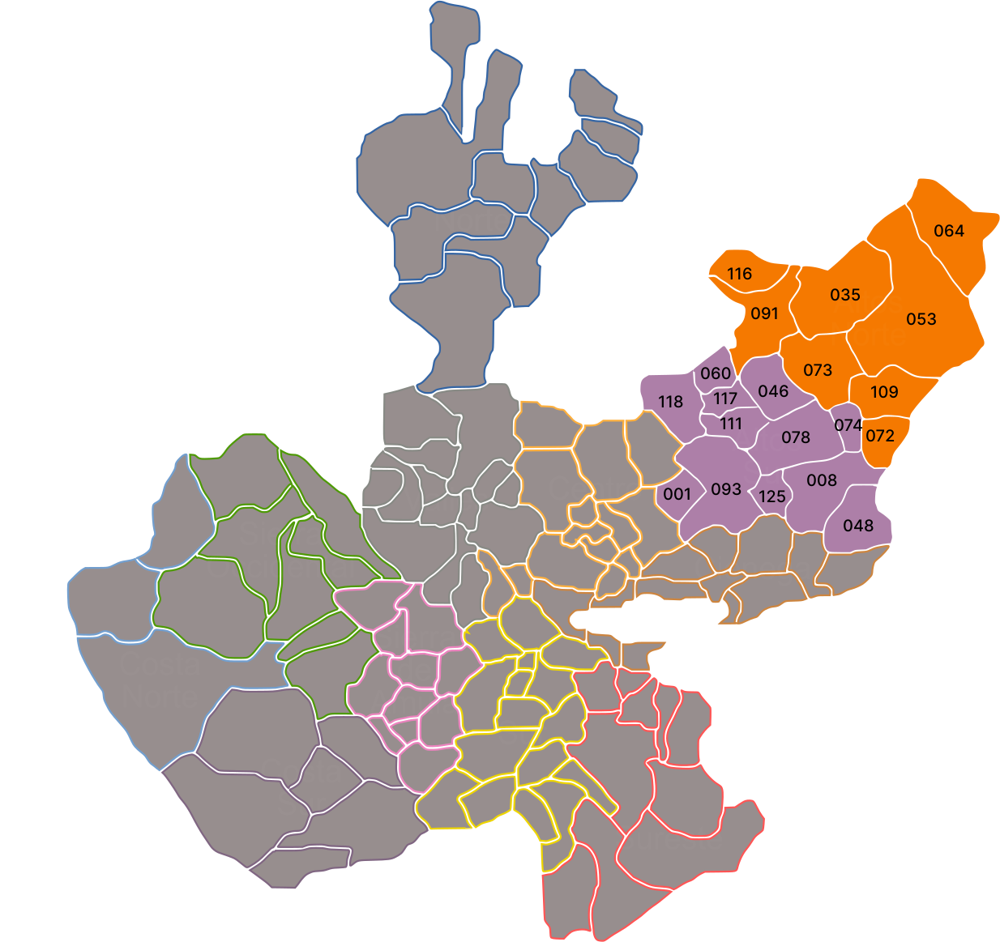

Región Altos de Jalisco
El mapa general de Jalisco está en construcción; este prototipo se centra en las regiones Altos Norte y Altos Sur. Identifica cada municipio y su clave geográfica siguiendo el color que lo resalta en la ilustración.
Región Altos Norte
- Encarnación de Díaz035
- Lagos de Moreno053
- Ojuelos de Jalisco064
- San Diego de Alejandría072
- San Juan de los Lagos073
- Teocaltiche091
- Unión de San Antonio109
- Villa Hidalgo116
Región Altos Sur
- Acatic001
- Arandas008
- Cañadas de Obregón117
- Jalostotitlán046
- Jesús María048
- Mexticacán060
- San Ignacio Cerro Gordo125
- San Julián074
- San Miguel El Alto078
- Tepatitlán de Morelos093
- Valle de Guadalupe111
- Yahualica de González Gallo118
